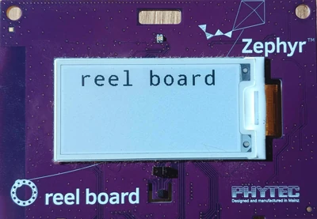

入门指南
按照本指南可以：
在 Ubuntu、macOS 或 Windows 上搭建命令行 Zephyr 开发环境（其他 Linux 发行版的说明见 安装 Linux 主机依赖项）
获取源代码
构建、烧录并运行示例应用程序
选择并更新操作系统
点击所使用的操作系统。
本指南适用于 Ubuntu 24.04 LTS 及更高版本。如果使用其他 Linux 发行版，请参见 安装 Linux 主机依赖项。
sudo apt update
sudo apt upgrade
选择 并安装所有可用更新。更多详细信息请参见 这篇 Apple 支持文章。
备注
不支持 x86-64 macOS。
选择 。点击 Check for updates 并安装所有可用更新。
安装依赖项
接下来，安装 Zephyr 配置和构建应用程序所需的主机工具。以下说明针对每种操作系统使用推荐的包管理器，以便在终端中使用这些工具。
目前主要依赖项的最低版本要求如下：
工具 |
最低版本 |
|---|---|
3.28.0 |
|
3.12 |
|
1.4.6 |
备注
强烈建议使用 Python 3.12。在某些系统上使用更新的 Python 版本可能会失败，例如在 Windows 上安装所需软件包时。
使用
apt安装所需依赖项：sudo apt install --no-install-recommends git cmake ninja-build gperf \ ccache dfu-util device-tree-compiler wget python3-dev python3-venv python3-tk \ xz-utils file make gcc gcc-multilib g++-multilib libsdl2-dev libmagic1
备注
由于 AArch64（ARM64）系统上没有
gcc-multilib和g++-multilib，可能需要将它们从待安装的软件包列表中去掉。输入以下命令，验证系统上已安装的主要依赖项的版本：
cmake --version python3 --version dtc --version
将其与本节开头表格中的版本进行对照。关于手动更新依赖项的更多信息，请参阅 安装 Linux 主机依赖项 页面。
安装 Homebrew：
/bin/bash -c "$(curl -fsSL https://raw.githubusercontent.com/Homebrew/install/HEAD/install.sh)"
Homebrew 安装脚本运行完成后，按照屏幕上的说明将 Homebrew 安装目录添加到路径中。
(echo; echo 'eval "$(/opt/homebrew/bin/brew shellenv)"') >> ~/.zprofile source ~/.zprofile
使用
brew安装所需依赖项：brew install cmake ninja gperf python3 python-tk ccache qemu dtc libmagic wget openocd
将 Homebrew 的 Python 文件夹添加到路径中，这样除了
python3和pip3之外，也可以执行python和pip。(echo; echo 'export PATH="'$(brew --prefix)'/opt/python/libexec/bin:$PATH"') >> ~/.zprofile source ~/.zprofile
备注
以下说明适用于原生 Windows 环境。也可以改用 适用于 Linux 的 Windows 子系统（WSL），并按照本指南中的 Ubuntu 说明操作。这种情况下请注意，要在 WSL 中烧录和调试硬件，需要先让 USB 设备对 WSL 可见，例如使用 usbipd-win。
在较新版本的 Windows（10 及更高版本）上，从 Microsoft Store 安装 Windows Terminal。以下说明在 cmd.exe 或 PowerShell 中均适用。
以下说明使用 Windows 官方包管理器 winget。如果无法使用 winget，请从各依赖项的官方网站安装，并确保它们的命令行工具位于 PATH 环境变量 中。
在较新版本的 Windows 中，winget 已默认预装。可以在终端窗口中输入
winget来验证。如果失败，可以 install winget。打开命令提示符（
cmd.exe）或 PowerShell 终端窗口。方法是按下 Windows 键，输入cmd.exe或 PowerShell，然后点击搜索结果。使用
winget安装所需依赖项：winget install Kitware.CMake Ninja-build.Ninja oss-winget.gperf Python.Python.3.12 Git.Git oss-winget.dtc wget 7zip.7zip
关闭终端窗口。
备注
可能需要将 7zip 安装文件夹添加到 PATH 中。
获取 Zephyr 并安装 Python 依赖项
接下来，使用 west 创建工作区，并获取 Zephyr 及其 模块。
这些命令使用 zephyrproject 作为工作区名称；也可以选择其他名称和位置。还需要将 Zephyr 的 Python 依赖项安装到 Python virtual environment 中，使它们与系统的 Python 安装相互隔离。
创建新的虚拟环境：
python3 -m venv ~/zephyrproject/.venv
python3 -m venv ~/zephyrproject/.venv
以普通用户身份 打开
cmd.exe或 PowerShell 终端窗口。cd %HOMEPATH% py -3.12 -m venv zephyrproject\.venv
cd $Env:HOMEPATH py -3.12 -m venv zephyrproject\.venv
激活虚拟环境：
source ~/zephyrproject/.venv/bin/activate
source ~/zephyrproject/.venv/bin/activate
备注
在 PowerShell 中激活 Python 虚拟环境需要运行一个脚本，因此需要允许脚本执行。
Set-ExecutionPolicy -ExecutionPolicy RemoteSigned -Scope CurrentUser
zephyrproject\.venv\Scripts\activate.bat
zephyrproject\.venv\Scripts\Activate.ps1
激活后，shell 提示符前会加上
(.venv)前缀。随时可以运行deactivate退出虚拟环境。备注
每次启动新的终端会话后，在使用 Zephyr 之前，记得先激活虚拟环境。否则会找不到
west等命令，或者这些命令可能在其他 Python 环境中运行，导致令人困惑的错误。安装 west：
west 是 Zephyr 的工作区管理工具；接下来的命令使用它来创建和更新工作区。
pip install west
获取 Zephyr 源代码：
west init创建一个 west 工作区，并克隆https://github.com/zephyrproject-rtos/zephyr作为其 清单仓库。然后
west update获取 Zephyr 的 west 清单 中列出的各个 west 项目 （模块），例如硬件抽象层（HAL）、库等。west init -m https://github.com/zephyrproject-rtos/zephyr ~/zephyrproject cd ~/zephyrproject west update
west init -m https://github.com/zephyrproject-rtos/zephyr ~/zephyrproject cd ~/zephyrproject west update
west init -m https://github.com/zephyrproject-rtos/zephyr zephyrproject cd zephyrproject west update小技巧
为减少磁盘空间占用，并避免在安装过程中下载不需要的模块或厂商 HAL，可以在运行
west update之前配置 项目组。安装 Zephyr 的 Python 依赖项：
west packages从已检出的 Zephyr 工作区（包括其模块）中读取 Python 依赖需求，因此安装的软件包与所获取的 Zephyr 版本相匹配。west packages pip --install
west packages pip --install
cmd /c zephyr\scripts\utils\west-packages-pip-install.cmd
python -m pip install @((west packages pip) -split ' ')
备注
安装这些依赖项可能会降级或升级 west 本身。
导出 Zephyr CMake 包。这会将当前的 Zephyr 检出目录注册到 CMake 的用户包注册表中，以便构建应用程序时
find_package(Zephyr)能够自动找到它。west zephyr-export
安装 Zephyr SDK
Zephyr 软件开发工具包（SDK） 包含 Zephyr 支持的每种架构的工具链。这些工具链包括为目标硬件构建 Zephyr 应用程序所需的编译器、汇编器、链接器和其他程序。
它还包含其他主机工具，例如定制构建的 QEMU 和 OpenOCD，用于仿真、烧录和调试 Zephyr 应用程序。
在 Zephyr 仓库中使用 west sdk install 安装 Zephyr SDK：
cd ~/zephyrproject/zephyr
west sdk install
cd ~/zephyrproject/zephyr
west sdk install
cd %HOMEPATH%\zephyrproject\zephyr
west sdk install
cd $Env:HOMEPATH\zephyrproject\zephyr
west sdk install
小技巧
可以使用命令选项选择 SDK 的安装位置，或只安装选定架构的工具链。详见 west sdk install --help。
备注
如果想不使用 west sdk 命令安装 Zephyr SDK，请参见 安装 Zephyr SDK。
构建 Blinky 示例
备注
Blinky 兼容大多数（但不是全部）开发板。如果所用开发板不满足 Blinky 的 要求，Hello World 是一个不错的替代选择。
如果不确定 west 对所用开发板使用的名称，可以用 west boards 列出 Zephyr 支持的所有开发板。开发板的 Board Catalog 也会给出传递给 west build 的确切开发板目标名称。
使用 west build 构建 Blinky。将 <your-board-name> 替换为所用开发板的名称：
cd ~/zephyrproject/zephyr
west build -p always -b <your-board-name> samples/basic/blinky
cd ~/zephyrproject/zephyr
west build -p always -b <your-board-name> samples/basic/blinky
cd %HOMEPATH%\zephyrproject\zephyr
west build -p always -b <your-board-name> samples\basic\blinky
cd $Env:HOMEPATH\zephyrproject\zephyr
west build -p always -b <your-board-name> samples\basic\blinky
-p always 选项强制进行全新（pristine）构建，即删除之前任何配置产生的构建输出。这样在入门阶段可以避免残留的过期文件。以后可以使用 -p auto，让 west build 通过启发式规则判断何时需要全新构建。详见 west build -h。
备注
一块开发板可能包含一个或多个 SoC，每个 SoC 又可能包含一个或多个 CPU 簇。为这类开发板构建时，需要指定示例要针对的 SoC 或 CPU 簇。例如，要为 nRF5340 DK 上的 cpuapp 核构建 Blinky，开发板必须写为 nrf5340dk/nrf5340/cpuapp。更多详细信息另请参见 开发板术语。
烧录示例
连接开发板（通常通过 USB），如果有电源开关，请将其打开。如果不确定如何操作，请在 支持的开发板和扩展板 中查看所用开发板的页面，因为有些开发板需要特定的设置或步骤才能烧录。
使用 west flash 烧录示例。这会将刚构建的应用程序写入所连接的开发板：
west flash
备注
可能需要安装开发板所需的其他 主机工具。如果缺少任何必需的依赖项，west flash 命令会打印错误信息。
备注
在 Linux 上，首次使用调试探针烧录之前，可能需要配置 udev 规则。请参见 设置 udev 规则。
如果使用的是 blinky，LED 将开始闪烁，如下图所示：


运行 blinky 的 Phytec reel_board
后续步骤
以下是进一步探索 Zephyr 的一些后续步骤：
寻求帮助
在寻求帮助之前，请先搜索本文档、Zephyr 项目的 GitHub 讨论区和 issue，以及 Discord 聊天记录，问题可能已经有了答案。也可以向本文档每个页面上都提供的 聊天机器人 提问。
邮件列表：通常应在 users@lists.zephyrproject.org 列表中寻求帮助。Search archives and sign up here。
GitHub：使用 GitHub discussions 提问，使用 GitHub issues 报告缺陷和提出功能请求。
Discord：可以通过此 Discord invite 加入。
寻求帮助时，请提供：
想要做什么
尝试过什么，包括运行过的命令
发生了什么，包括完整的文本输出
请复制粘贴文本，而不是分享截图。在 Discord 或 GitHub 上分享超过 5 行的终端输出、源代码或日志时，请使用三个反引号创建代码片段。